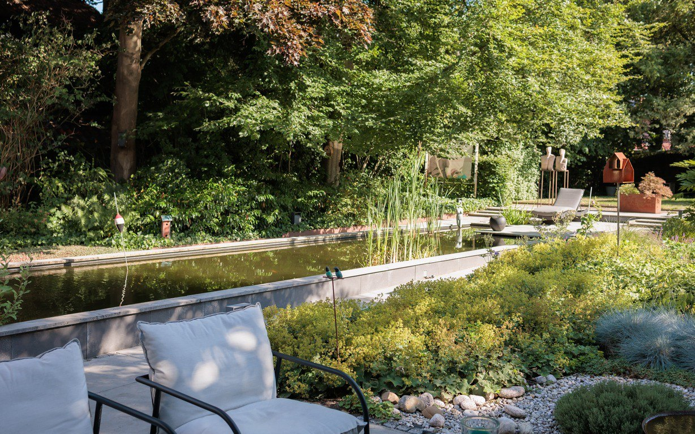

Ons verhaal
Sfeervolle buitenruimtes, met zorg gemaakt
Moerman Hoveniers is een hoveniersbedrijf op de Veluwe, gevestigd in Harskamp. Wij geloven dat een tuin meer is dan een mooi resultaat: het is een plek om te leven, tot rust te komen en te genieten.
Van het eerste ontwerp tot het jaarlijkse onderhoud werkt u met één vast, betrokken team. Wij denken met u mee, kiezen voor kwaliteit en duurzame materialen, en leveren werk af waar wij trots op zijn.
(Voorbeeldtekst — te vervangen door het definitieve bedrijfsverhaal.)
